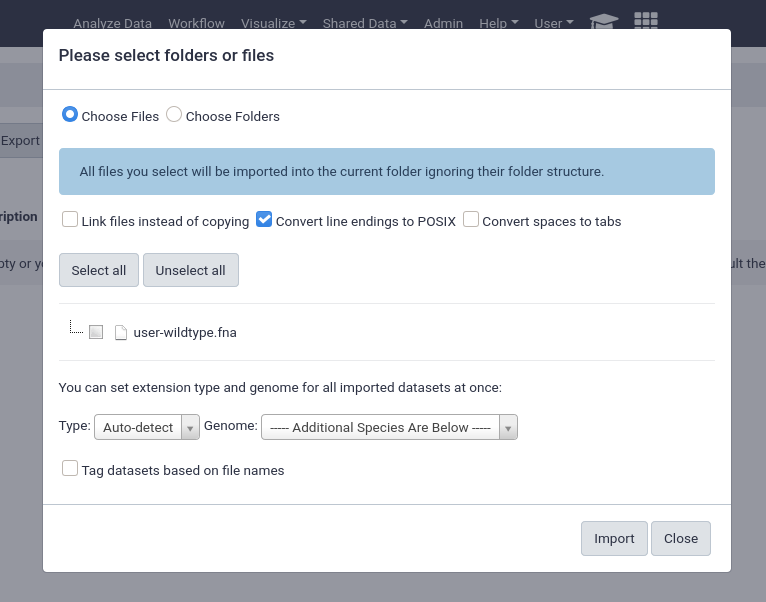

Data Libraries
 Helena Rasche
Helena Rasche Saskia Hiltemann
Saskia HiltemannOverview
Questions:Objectives:
How do data libraries work?
What are they good for?
How can I use them?
How can I setup permissions for them?
Requirements:
Setup a data library
Manage permissions
Import data from disk
- Galaxy Server administration
- Ansible: slides slides - tutorial hands-on
- Galaxy Installation with Ansible: slides slides - tutorial hands-on
- Galaxy Tool Management with Ephemeris: slides slides - tutorial hands-on
Time estimation: 30 minutesSupporting Materials:Last modification: Jul 9, 2021
 Questions:
Questions:
Data libraries are a great way to provide structured repositories of data to everyone on your server, or to a subset of your users. Datasets in libraries do not count against user quotas, so they are commonly used to provide the results of a sequencing run or similar project to a group of users on the servers.

Agenda
Setup
Before we can import local data, we need to configure Galaxy to permit this. Additionally we will setup an example data library which we can use for demonstrative purposes.
hands_on Hands-on: Setting up Data Libraries
We will add a pre-task to clone a data repository into your machine. We will use this as the source for a library dataset.
--- a/galaxy.yml +++ b/galaxy.yml @@ -8,6 +8,9 @@ - name: Install Dependencies package: name: ['acl', 'bzip2', 'git', 'make', 'python3-psycopg2', 'tar', 'virtualenv'] + - git: + repo: 'https://github.com/usegalaxy-eu/libraries-training-repo' + dest: /libraries/ roles: - galaxyproject.postgresql - role: natefoo.postgresql_objectsEdit the file
group_vars/galaxyservers.ymland set the following variables:--- a/group_vars/galaxyservers.yml +++ b/group_vars/galaxyservers.yml @@ -29,6 +29,8 @@ miniconda_manage_dependencies: false galaxy_config: galaxy: + library_import_dir: /libraries/admin + user_library_import_dir: /libraries/user tool_data_table_config_path: /cvmfs/data.galaxyproject.org/byhand/location/tool_data_table_conf.xml,/cvmfs/data.galaxyproject.org/managed/location/tool_data_table_conf.xml dependency_resolvers_config_file: "{{ galaxy_config_dir }}/dependency_resolvers_conf.xml" containers_resolvers_config_file: "{{ galaxy_config_dir }}/container_resolvers_conf.xml"Run the playbook:
code-in Input: Bash
ansible-playbook galaxy.yml
Importing Data
There are multiple options for importing data from your server, we’ll go through all of your choices below. But first, let’s take a quick look at the example library structure we’ve provided.
code-in Input: Bash
tree /librariescode-out Output: Bash
/libraries/ ├── admin │   └── admin-wildtype.fna ├── example-library.yaml ├── README.md └── user ├── admin@example.com │   └── user-wildtype.fna └── admin@example.org └── user-wildtype.fna 4 directories, 5 files
1.sh
We have a directory named admin, which will be available to all admin users (we set library_import_dir: /libraries/admin earlier.)
Additionally we have a user directory, below the user directory are more directories with the user’s email as they directory key. Data can be placed in here, and it will become accessible to those users (we set user_library_import_dir: /libraries/user for this.)

from History
This is by far the easiest and most convenient option for small datasets, or datasets that are just already in a history

You can easily select multiple files and quickly import them.
from User Directory
If user directories are configured, as we did at the beginning of this tutorial, then users will be able to import any files under their personal directory. This can be used for a wide variety of setups, e.g. providing the output of sequencing machines to users. This can point to the same directory structure that’s used by the FTP service, if you want your users to be able to import files directly from FTP.

This will enable the option for everyone, any unprivileged user with a folder in the user_library_import_dir directory and permissions on a data library can import things from their import directory.
tip Tip: Do you not see a directory here?
We pre-created a directory for someone registered as
admin@example.org, but if you are logged in with an account registered with a different email, you’ll see nothing.You can fix this by going into /libraries/user and
ln -s admin@example.org whatever-email-you-usedThen it should appear in Galaxy.
from import Directory (Admins only)
Similarly to the user import directories, there is the option to have an admin only import area. If one admin is responsible for creating the data libraries and importing data this can be a good option.

An important feature of data libraries importing is the ability to “link files instead of copying”. If you know your data will not be deleted (e.g. sequencing data sitting on an NFS), then you can use this option to further decrease the amount of storage your Galaxy server requires. The datasets can be used as if they were normal datasets, imported by users and analysed, but not imported into the Galaxy data storage area.
Automatically Populating a Data Library
If your data is accessible via URL, you can write a yaml file to import and setup the data library automatically. We’ve included this file in the example data libraries repository we cloned at the beginning:
code-in Input: Bash
cat /libraries/example-library.yaml
code-out Output: Bash
--- destination: type: library name: Mouse sequencing project description: some data synopsis: samples collected from somewhere items: - url: https://zenodo.org/api/files/287966da-5411-4f79-8cfb-0ffa84d0d6cc/wildtype.fna src: url ext: fasta info: https://doi.org/10.5281/zenodo.582600 - name: A directory description: Exome sequencing means that all protein-coding genes in a genome are items: - url: https://zenodo.org/api/files/287966da-5411-4f79-8cfb-0ffa84d0d6cc/mutant_R1.fastq src: url ext: fastqsanger info: https://doi.org/10.5281/zenodo.582600 - url: https://zenodo.org/api/files/287966da-5411-4f79-8cfb-0ffa84d0d6cc/mutant_R2.fastq src: url ext: fastqsanger info: https://doi.org/10.5281/zenodo.582600
Let’s try setting that up in our Galaxy!
Tip: Getting your API key
Galaxy admin accounts are specified as a comma-separated email list in the
admin_usersdirective ofgalaxy.yml. If you have set up your Galaxy server using the Galaxy Installation with Ansible tutorial, this is set toadmin@example.org.
- In your browser, open your Galaxy homepage
- Log in, or register a new account, if it’s the first time you’re logging in
- Go to
User -> Preferencesin the top menu bar, then click onManage API key- If there is no current API key available, click on
Create a new keyto generate it- Copy your API key to somewhere convenient, you will need it throughout this tutorial
hands_on hands-on: importing data library yaml.
re-activate the virtualenv you created for the ephemeris tool management tutorial.
code-in input: bash
. ~/ephemeris_venv/bin/activatetip missing?
then you might need to re-run the steps:
virtualenv -p python3 ~/ephemeris_venv . ~/ephemeris_venv/bin/activate pip install ephemeriswe’ll use the
setup-data-librariescommand to install the data in this yaml file into a library in our galaxy.code-in input: bash
setup-data-libraries -g https://your-galaxy -a <api-key> --training -i /libraries/example-library.yaml --legacycode-out output
library name: mouse sequencing projectthis command is safe to re-run. for example if you update the yaml, it will simply report that the library exists before ensuring all files exist in their appropriate location:
library name: mouse sequencing project library already exists! id: f597429621d6eb2b

That’s it! You should be able to see your newly created data library in your Galaxy.
2.sh
Got lost along the way?
If you missed any steps, you can compare against the reference files, or see what changed since the previous tutorial.
Note that we’ve used some special flags here, --training and --legacy. Training sets some defaults that make sense for the GTN (mostly around library descriptions / etc.)
--legacy
This enables the use of legacy APIs even for newer Galaxies that should have a batch upload API enabled. Unfortunately the new batch upload API is not able to update existing data libraries in place and will always create new libraries with the same name. So currently --legacy is quite useful for maintaining a YAML file, and running setup-data-libraries regularly whenever that file has updates.
But this comes with the downside that the entire URL is used for the filename.
GTN Data
This process scales quite well. Galaxy Europe, in their mission to support all of the GTN materials on their server setup a shared-data repository, a single giant YAML file with all of the data from the GTN tutorials. This was then expanded to other UseGalaxy.* servers to provide synced training libraries for all of the major servers.
Do you want the training data synced on your server? If so join the shared data repository! If you provide us with a non-admin API key and a data library to upload data into, we can sync this automatically.
Using Data from Libraries
Users can now conveniently use datasets in libraries when they are running analyses, without having to import them first.
The tool form provides a button on the right of every dataset selector which allows users to “Browse datasets”

Users can then choose from datasets in their history, or browse through the data libraries

Here users can see every file accessible to them in the data library to begin analysing.

Key points
Data libraries are a great way to share data with groups of users
Frequently Asked Questions
Have questions about this tutorial? Check out the FAQ page for the Galaxy Server administration topic to see if your question is listed there. If not, please ask your question on the GTN Gitter Channel or the Galaxy Help ForumFeedback
Did you use this material as an instructor? Feel free to give us feedback on how it went.

Citing this Tutorial
- Helena Rasche, Saskia Hiltemann, 2021 Data Libraries (Galaxy Training Materials). https://training.galaxyproject.org/training-material/topics/admin/tutorials/data-library/tutorial.html Online; accessed TODAY
- Batut et al., 2018 Community-Driven Data Analysis Training for Biology Cell Systems 10.1016/j.cels.2018.05.012
details BibTeX
@misc{admin-data-library, author = "Helena Rasche and Saskia Hiltemann", title = "Data Libraries (Galaxy Training Materials)", year = "2021", month = "07", day = "09" url = "\url{https://training.galaxyproject.org/training-material/topics/admin/tutorials/data-library/tutorial.html}", note = "[Online; accessed TODAY]" } @article{Batut_2018, doi = {10.1016/j.cels.2018.05.012}, url = {https://doi.org/10.1016%2Fj.cels.2018.05.012}, year = 2018, month = {jun}, publisher = {Elsevier {BV}}, volume = {6}, number = {6}, pages = {752--758.e1}, author = {B{\'{e}}r{\'{e}}nice Batut and Saskia Hiltemann and Andrea Bagnacani and Dannon Baker and Vivek Bhardwaj and Clemens Blank and Anthony Bretaudeau and Loraine Brillet-Gu{\'{e}}guen and Martin {\v{C}}ech and John Chilton and Dave Clements and Olivia Doppelt-Azeroual and Anika Erxleben and Mallory Ann Freeberg and Simon Gladman and Youri Hoogstrate and Hans-Rudolf Hotz and Torsten Houwaart and Pratik Jagtap and Delphine Larivi{\`{e}}re and Gildas Le Corguill{\'{e}} and Thomas Manke and Fabien Mareuil and Fidel Ram{\'{\i}}rez and Devon Ryan and Florian Christoph Sigloch and Nicola Soranzo and Joachim Wolff and Pavankumar Videm and Markus Wolfien and Aisanjiang Wubuli and Dilmurat Yusuf and James Taylor and Rolf Backofen and Anton Nekrutenko and Björn Grüning}, title = {Community-Driven Data Analysis Training for Biology}, journal = {Cell Systems} }